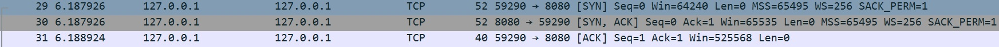

Features
Transmission Control Protocol (TCP)
- It is a connection oriented protocol.
- It offers reliability, flow-control and error-recovery functions.
- The packets can be discarded before reaching their targets
Three way / TCP Handshake
It is used to create a TCP socket connection between a local host/client and server.
- A client sends a SYN data packet to the server.
- The server responds with SYN/ACK data packet if it is having open port that can accept and initiate new connections.
- The client then responds with ACK data packet.
After the above process is complete, a connection is created between client and server for further communication. In case server is not running, RST/ACK data packet is sent in the second step.

Examples
Frequently Asked Questions